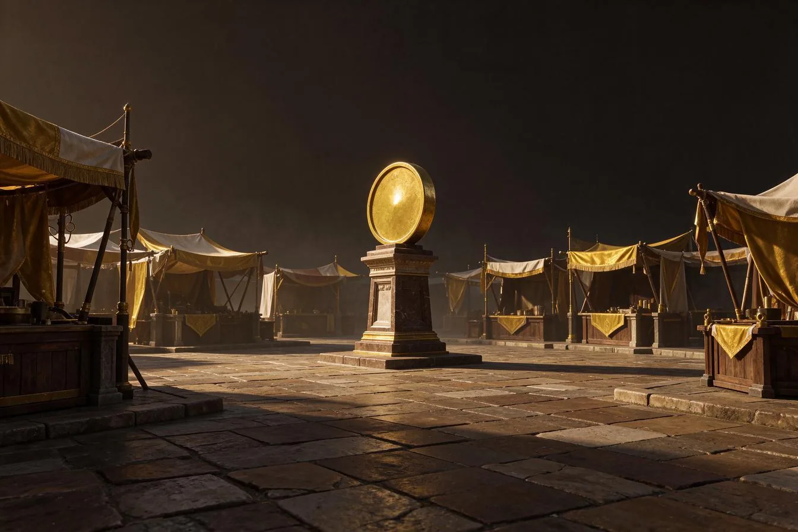

Unsealed · Live
PROVADIA Discord
Real-time community gathering outside the vault — the town's hall, standing open tonight.
Enter Discord →The living world of this town needs a WebGL-capable browser. This is its still face — every word, record and door below is the town itself.
Inside the Coin · Door 06 · The Agora
The town's gathering floor. Where Bricklayers gather and deliberate in the open — the floor, the ledger, and the doors stand open to read tonight, and writing on the floor opens when the town’s members door completes its server patch. Free town membership opens the Bricklayer registry — no coin purchase required, nothing to stake.
The Forum · The Square
The forum of this town is a place before it is anything else: the Agora, the gathering square at the heart of Provadia.
The doors below stand in this square as buildings stand around a square — each one a house with its own purpose, not a button on a page. A visitor walks to them the way a visitor walks across a square.
People talk here. They talk about the project — for it or against it, in plain words, in the open. The talk is the square's purpose. The law that governs the talk is written on the conduct face at the foot of this page, and it binds every room in the town.
The floor below is one room with two faces, and both are first-class citizens of this page: the Spatial Amphitheatre, where real discussion stands as light in a bronze bowl, and the Plain Ledger, the same floor in clean text. One tap moves between them; nothing is hidden in either.

The Forum · 01 — The Threshold
Membership in this town is free, and the registry stands open.
A member's account is made with an email and a password of his own — no coin to buy, no fee to pay, nothing to stake. Joining writes your name into the town registry as a Bricklayer, and your days in the record begin: the thirty days the Knock asks of every house run on a member's account, counted from the day the name is written.
Members gather for the life of the square: the talk of the town, for it or against it, under the one conduct law written at the foot of this page; the Day-Book, read as it is written; and the company of the Keeper, the town's resident host.
The registry service stands behind this door. Checking whether it answers…
Your Bricklayer membership is permanent and non-transferable. Joining is free and never requires holding PROVADIA.
Welcome, Bricklayer
Genesis Member — the founding-era crest, carried by every name written in the registry's founding era. It is a citizenship honor, not the collectible; the alcove at the foot of this page shows the collectible itself, under seal.
The Forum · 02 — The Chambers
The Amphitheatre Is Quiet — 0 discussions in the vault
Nothing here is simulated. The bowl lights only when real Bricklayers speak.
In the spatial face, every real discussion stands in the bowl as a prism of obsidian and gold; its light is its life — replies and recency only, counted from the real floor below. At rest, the bowl rests: no glyph rain, no idle motion, no invented crowd.
Plain Ledger View · The Floor's Ledger
Nothing here is simulated or pre-populated. Join the town above to open the first discussion on the floor.
Join the town above to open the first discussion on the floor.
The Forum · 03 — The Hearth & Gates
Unsealed · Live
Real-time community gathering outside the vault — the town's hall, standing open tonight.
Enter Discord →Sealed
Telegram remains sealed by the founder's order — the town's only closed external door. Behind it, when it opens, stand two rooms of one house: the town-crier channel, where the town's announcements are cried — the counter, the record, the news of the Wall — and no other voice speaks there; and its linked discussion group, where the town gathers and speaks back. There is no link on this door, because there is nothing true to link to yet; when the rooms exist, their address will be written here — receipted, like everything else in this town.
Telegram SealedSolnik Off Watch
Solnik, the town's resident host, is honestly offline until the founder's key steps land — no voice is simulated at this hearth. Need direct help? The written support desk below answers today.
Contact support ↓The Forum · An Open Door
The hall stands open: discord.gg/GUXuaauKb
Behind this door stands the town's hall: the server named PROVADIA — The Town of Record. The door lands a guest in #welcome, where the house law is pinned and the way in is written. Its rooms are drawn in its blueprint, each with its own work:
Its rolls are three: Bricklayer, Founder, and Captain.
This door stands open, and the invite above does not expire. It is the only Discord door of this town — any other server wearing the town’s name is not us.
Its address is written here — receipted, like everything else in this town.
The Forum · The Support Desk
Coins have no support. This one does.
That is the town's support standard, stated on the face: a question asked of this town is answered by the town, on a standing watch — not left knocking on a void. The desk has two doors.
The floor door answers today. For the Captain's door, the honest line stands until his living voice wakes: the keeper's house is built; he wakes when the host stands.
We never DM first.
No claim links. No seed phrases, ever. Nobody from this town will ever ask for either — anyone who asks in the town's name is not the town.
The Forum · 04 — Conduct & Honors
One law of conduct covers every room of this town — the Telegram group, the Discord rooms, and the Captain's Chamber alike. It is short, and it is the whole law.
Cursing, dirty talk, and abuse earn one calm public warning from the Captain's account or the founder's account: continue with this language or attitude and you are banned from this project. A second offense is removal — a ban from the rooms.
Every ban is logged — handle, date, and reason — into the Day-Book's world, by the Captain's report, where it stands on the record.
What was paid to the project through a returnable rail is returned through that same rail. Market trades cannot be un-traded, and the coin stays the holder's own property: the ban closes the community, never a man's wallet.
Opinions are free, and criticism is protected. Liking the project or lowering it, arguing its merits, disagreeing with the Captain or with the founder, hard questions in plain words — none of it is an offense, and none of it is ever warned. The sole trigger for the rule above is profanity and abuse. Manners are the law; opinions are free.
A warning issued for criticism is itself a breach of the house law, and is corrected by the Captain when it is reported.
A thread that reaches a genuine decision does not evaporate: it is crystallized — encased in halite, marked on this floor, and hash-linked permanently into the Record, where talk becomes town history.
Non-transferable honors recognizing genuine deeds in the town — never airdrops of financial value.
The Forum · The Alcove off the Amphitheatre
In this alcove stands the first sight of the Genesis Bricklayer — the town's founding collectible, shown as a specimen, under seal.
Genesis Collectible · Specimen #000 / 470
The Genesis Bricklayer is an edition of 470 numbered pieces, free to gated, verified members when — and only when — the founder gives the deploy word. Citizenship is one thing and the collectible is another: a sale of the piece never moves a Bricklayer number, a Wall vote, or a line of town history. Under the Genesis Privacy Amendment, no Bricklayer number is ever published on the collectible or on-chain; the piece carries a serial only.
The birth ceremony — Solnik striking the seal — is being filmed in the town's studio. Its preview plate stands sealed until the film is judged; a ceremony that has not been filmed is not painted here.
Preview the Ceremony — Sealed · Film in Production
The Genesis Bricklayer Collectible is a free, numbered commemorative mark of early town membership. It carries no financial value, no gold ownership or redemption, no yield, and no voting or membership rights.
The Forum · Contact
The plain contact face of the town. These are the town's doors, and the whole of them:
Nothing else is a contact channel. Anything else claiming to be the town — any other address, account, or room — is not us.
PROVADIA is a place, not an investment. Holding it names you a Bricklayer in the town registry and gives you a vote on the Wall’s fate — and nothing else: no redemption, no yield, no rights, no expected return.